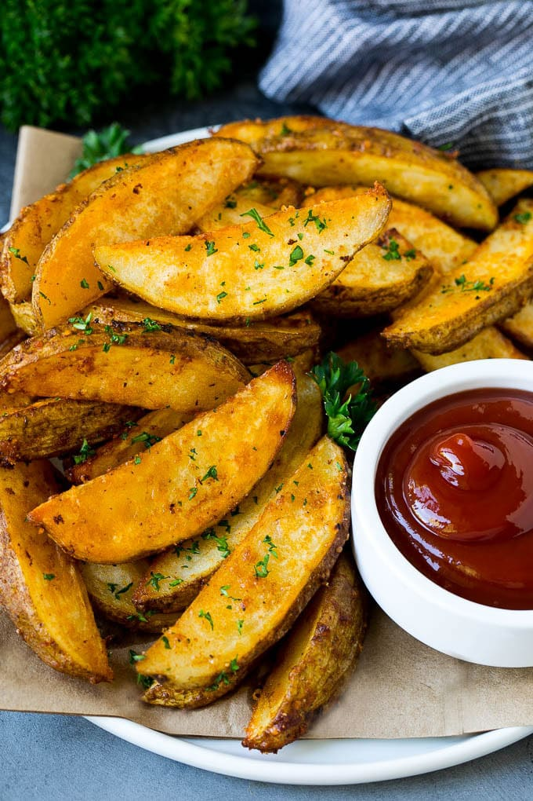

Potato Wedges

Ultra crispy oven baked potato wedges cooked to golden brown perfection. These are the perfect side dish for any meal. You can never go wrong with these.
Ingredients
- 3 large russet potatoes
- 1/3 cup of olive oil (80 mL)
- 2 teaspoons of salt
- 1 teaspoon of paprika
- 1/2 teaspoon of pepper
- 1 table spoon of garlic powder
- 2 tablespoons of fresh parsley
- cooking spray
- 1/3 cup of grated parmesan cheese
Directions
- Preheat oven to 400 degrees fahrenheit or 200 Celsius.
- Wash potatoes and cut into 8ths.
- Toss the wedges in olive oil and the seasoning.
- Place wedges on baking sheet evenly.
- Bake for 40 min for a crispy finish!